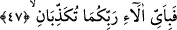

kendilerine ulaşanlar sayılıp döküldükten sonra, âhirette kendilerine fazlasıyla
verilecek olan nimetlerin sayılmasına bir başlangıçtır. “Makam” kelimesi “bir yer
ismi”dir. Rabbinizin makamından maksad, hesap vermek üzere kulların duracakları
yerdir. “İnsanlar o günde âlemlerin Rabbinin huzurunda divan duracaklardır” (el-
Mutaffifîn, 83/6) buyrulduğu gibi. Makam’ın Rabb’e izâfe edilmesi gerçek mânâda
mülkün Allah’a mahsus olmasındandır. Çünkü o günde hükümranlık yalnız Allah’ındır.
Aynü’l-maanî’de denilmiştir ki; bu âyet-i kerîme, Hz. Ebû bekir (r.a.) hakkında
inmiştir. Susuz olduğu bir anda içtiği süt hoşuna gitmiş, helal olmadığı haberi verilince
de kusmuştur. Rasûlullah (s.a.) bunu işitince kendisine, “Allah sana rahmet etsin, senin
hakkında âyet indi. Günah işlemeye niyet edip de Allah’ı hatırlamak suretiyle Allah
korkusundan günahı terk eden herkes bu âyetin hükmüne girer,” buyurdu.
“İki cennet vardır.” Biri Allah’tan korkan insan için, diğeri de Allah’tan korkan
cinler içindir. Şübhesiz ki, hitap her iki topluluk için olmakla beraber, mânâ iki
topluluktan Allah’tan korkan, isyan ve inkârdan sakınan içindir. Yahut, her bir kimse için
îmânından dolayı bir cennet, ameli için de diğer bir cennet, ya da ibâdet ve tâat için bir
cennet, günah ve isyanı terk ettiği için diğer bir cennet vardır. Yahut, işlediği sevap
karşılığı bir cennet, diğer cennet de Allah’ın fazl u kereminden ikram olarak verdiği
cennettir. Cismânî ve rûhânî cennet olduğu da söylenmiştir.
Muvazzah’da şöyle gelmiştir: “onlara cennette iki bahçe verir. Bunlardan birisinin
uzunluk ve genişliği yüz yıllık yoldur. Her bahçenin ortasında güzel saraylar, gönül
çelici hûrîler vardır.”
Kuşeyrî demiştir ki; biri peşin cennettir. O da Allah’a yapılan münâcâtın tadı,
müşâhede hakikatlerinden ve kalplere gelen vâridâtın doğruluğundan zevk almaktır.
Diğeri de te’cil edilmiş cennettir. O da âhirette verilmek üzere vaad edilen cennettir.
Bahru’l-ulûm adlı eserde denilmiştir ki; Cennetin biri Allah’a isyan etmekten korkan
insanlar, diğeri de isyandan korkan cinler içindir. Çünkü hitab her iki toplumadır. Ancak
bu görüşe karşı itiraz vardır. Çünkü Peygamber Efendimiz (s.a.): “Cinlerin îman
edenlerine sevap, isyan edenlerine de ikab vardır” buyurmuştur. Muhammed
ümmetiyle birlikte cennet ehli değillerdir. Onlar, içinde ağaçların ve meyvelerin bittiği,
ortasından nehirlerin aktığı cennetin duvarı durumundaki âraf üzerindedirler.
Fakir (Bursevî) der ki: Ahkâf sûresinin sonunda mezhebin görüşü şöyledir; cin
tâifesi, sevap ve azab bakımından âdemoğlu hükmündedir. Her ne kadar sevabı ne
şekilde aldıklarını bilmiyorsak da cinler de insanlar gibi mükelleftirler. O sûrenin bu
konudaki açıklamasına bak.
47. Öyleyken Rabbinizin nimetlerinden hangisini yalanlayabilirsiniz?